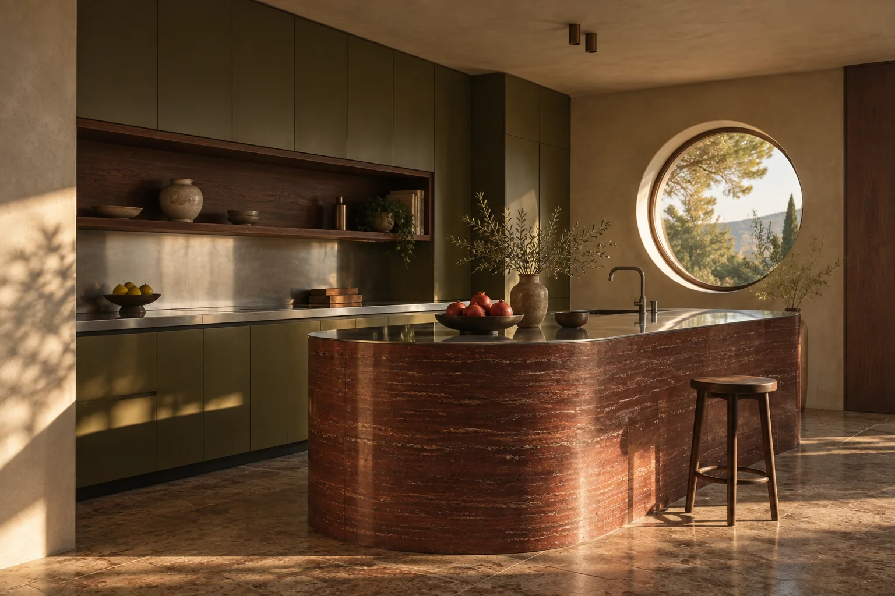

Partire dalle persone.
Prima delle forme, vengono i gesti e le abitudini che daranno vita agli ambienti.

ROUND / Studio
Ascolto, proporzioni e materia: il nostro modo di pensare gli interni.
Chi siamo
ROUND è uno studio di interior design. Progettiamo spazi residenziali e luoghi condivisi, tenendo insieme uso quotidiano e identità del luogo.

Ogni progetto comincia con una lettura attenta: del luogo, delle persone e delle possibilità ancora invisibili.
Prima delle forme, vengono i gesti e le abitudini che daranno vita agli ambienti.

Pianta, luce, arredi e materiali seguono una direzione comune.

Preferiamo ciò che mantiene carattere e utilità nel tempo.

Il percorso
Leggiamo il contesto, ascoltiamo le esigenze e definiamo le priorità.
Organizziamo funzioni, proporzioni e atmosfera in una visione condivisa.
Materiali, arredi e dettagli danno concretezza alla direzione scelta.
Cosa facciamo
Definiamo distribuzione, luce, finiture e arredi come parti di un unico progetto.
Studiamo le possibilità dello spazio e costruiamo una direzione prima delle scelte di dettaglio.
Selezioniamo materiali, luci e arredi per dare consistenza al carattere degli ambienti.
Una domanda semplice
Da qui può iniziare una conversazione concreta sul progetto.
Raccontacelo